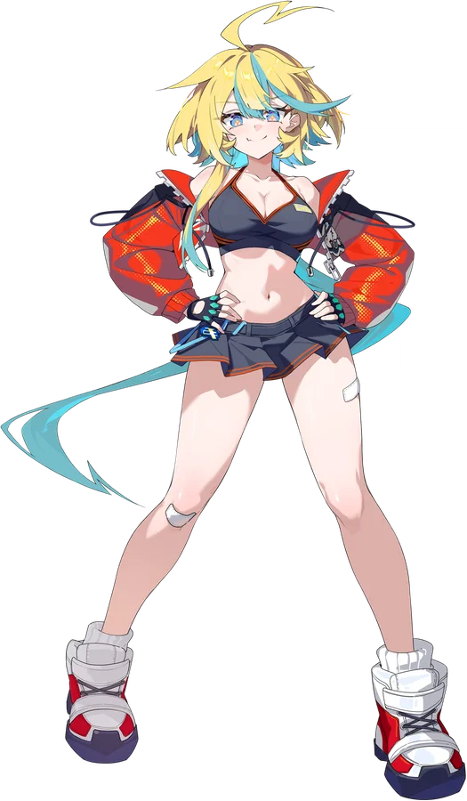
玲玲 · 怪力乱神
蓝海晴和露佳的大学同学，好闺蜜。人有点疯癫的超级大力女。她有可能随手抓起任何东西来攻击人。据她自己说小时候得了一场大病，可能被什么东西给附身了。但是除了怪力和能控制电流外也没什么副作用就没往心里去。机器人换装同好会的原会长。
下次移动改为冲锋移动。在1-5中选择一个数字，作为下次冲锋移动的最终点数。 冲锋时挟持经过的所有角色，使挟持的角色防御力-3，持续1轮。停留后依次决定是否挑战他们。
PVE下次移动改为冲锋移动。在1-7中选择一个数字，作为下次冲锋移动的最终点数。 冲锋时挟持经过的所有怪物，停留后依次决定是否挑战它们。如果冲锋时经过了强化拒止则使挟持的怪物防御力-2，自身攻击力+2，持续2轮。
轮次奖励额外获得1张路障。经过路障后，主动技能冷却时间-2，下次移动速度+2。
PVE自身的路障转变为强化拒止，游戏开始时额外获得2张强化拒止。 经过路障后，获得1张强化拒止。
基础资料
PVE 特性
- 达到1星时攻击力+1
- 达到2星时攻击力+1、移动速度+1
- 达到3星时攻击力+1、防御力+1、移动速度+1
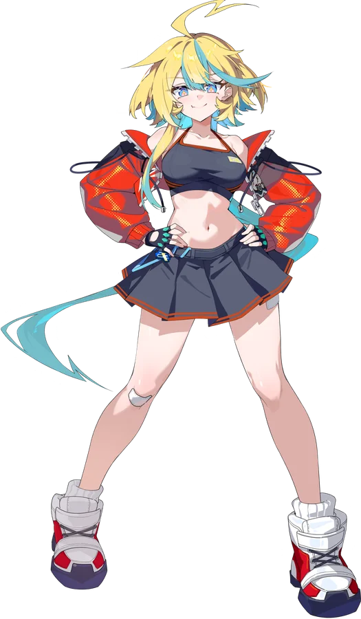
默认
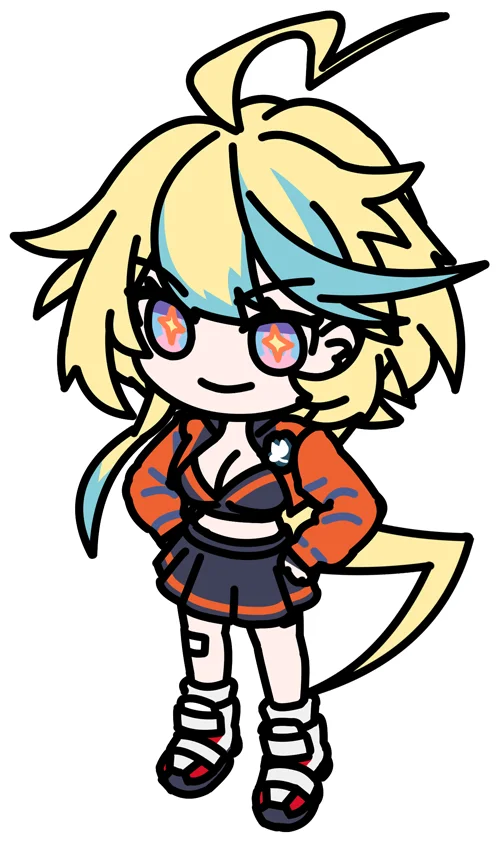
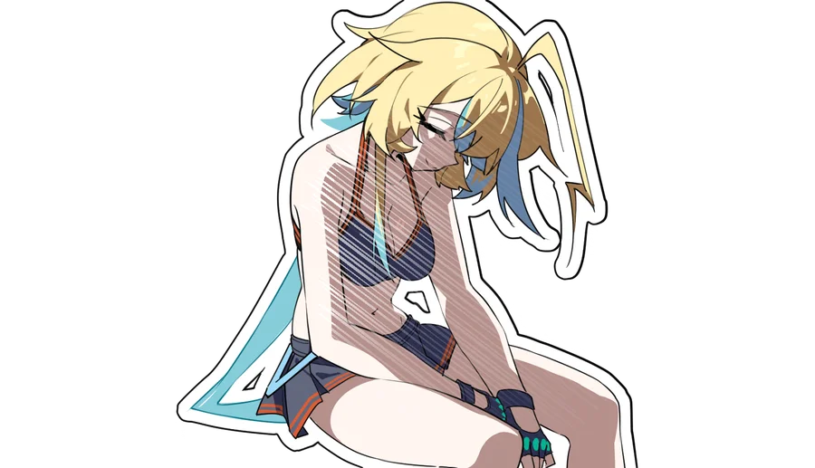
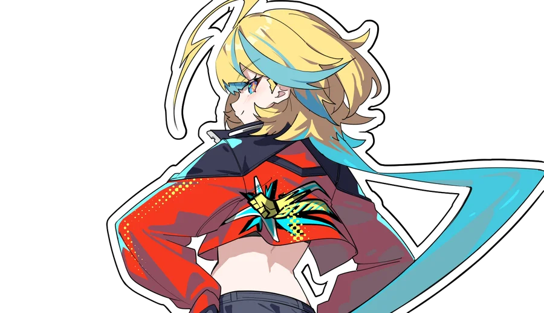
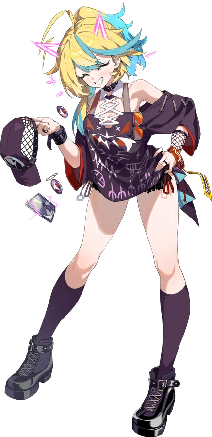
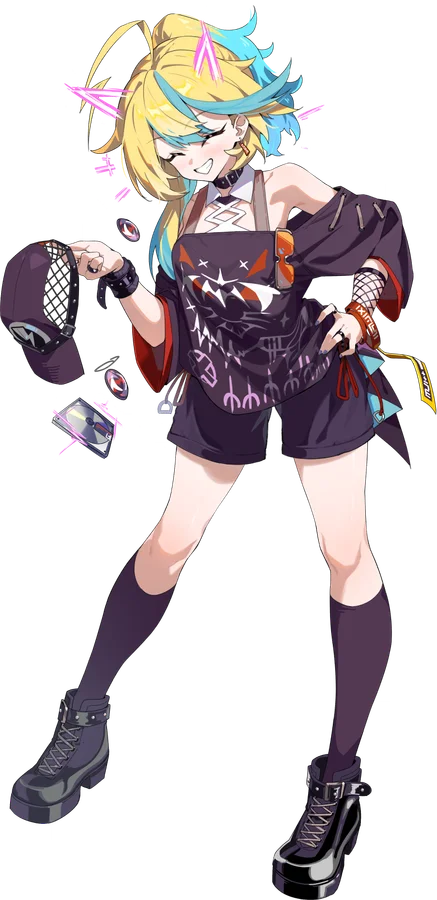
羁绊皮肤
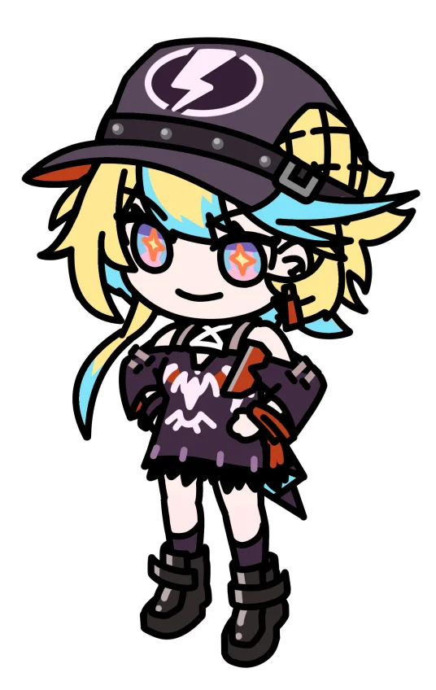
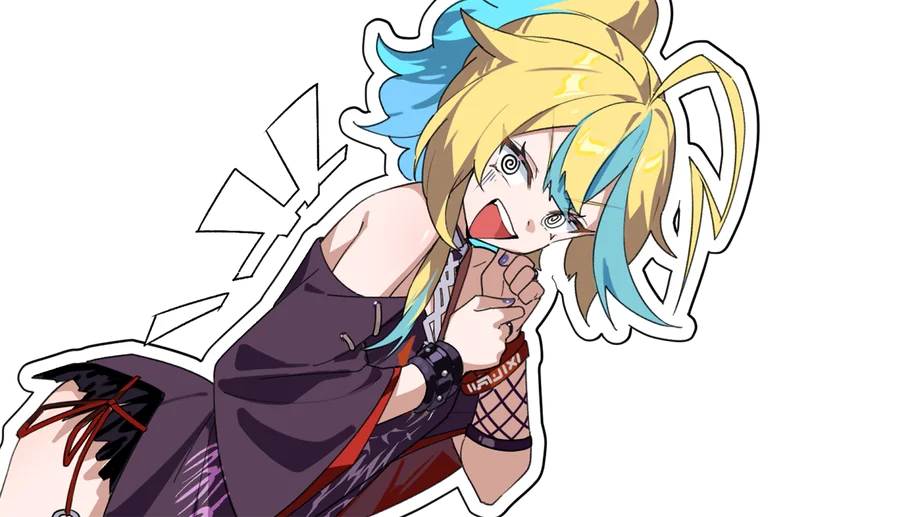
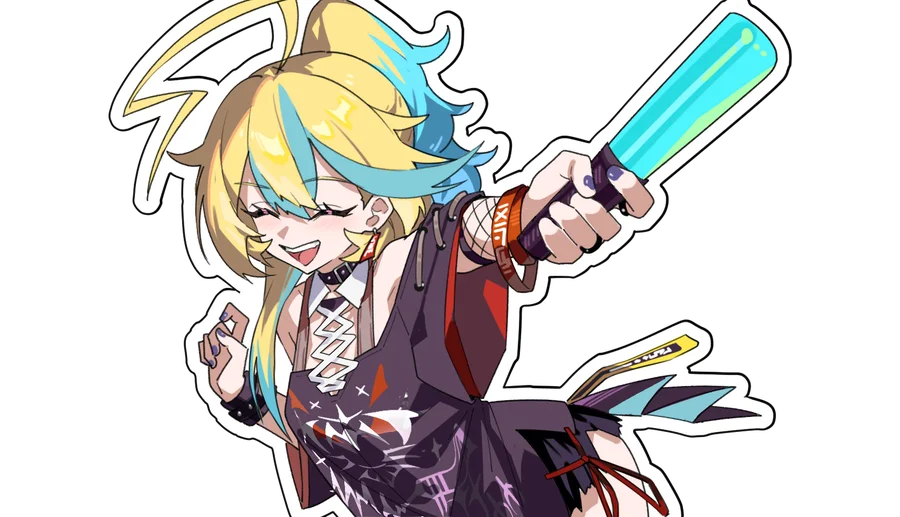
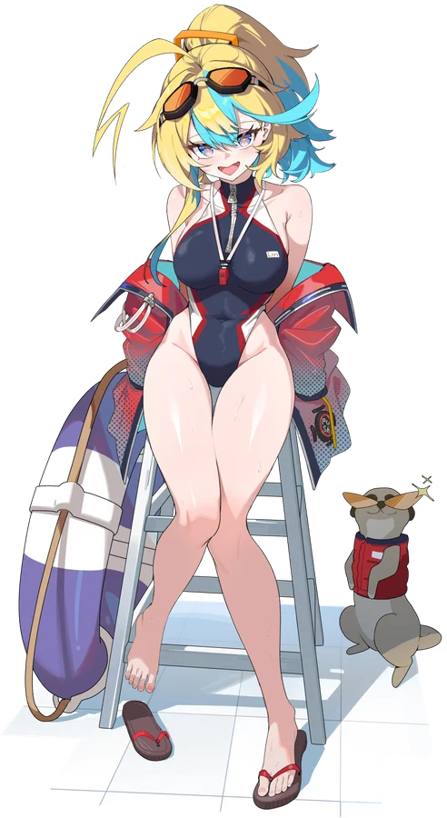
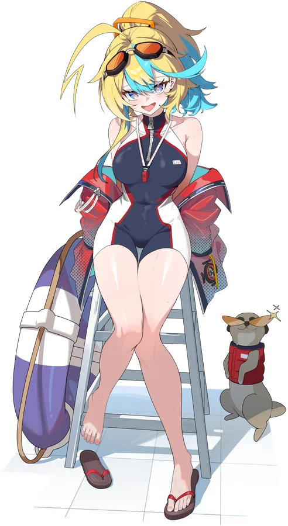
安全员
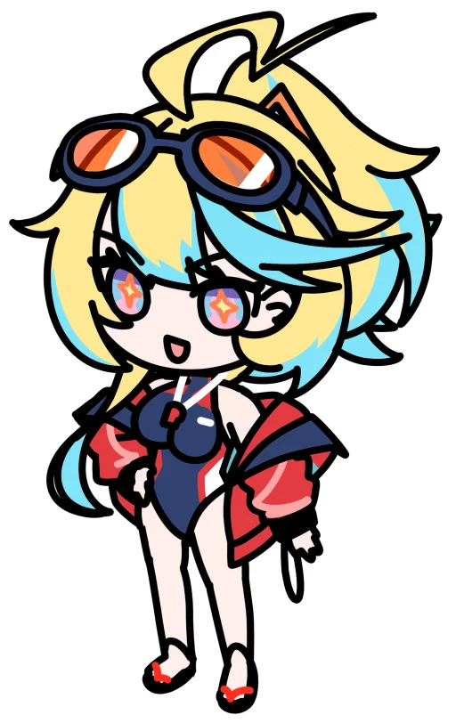
作为大学老师的玲玲，有一项闺蜜们无法比拟的优势——带薪休假的暑假。 但暑假也不能整天无所事事，她便当起了附近小学开放泳池的安全员。 别小瞧安全员的职责，会游泳的人也未必能胜任这份工作。 所谓的泳池安全员，不仅需要精湛的游泳技巧，还需掌握专业的救生知识。 而玲玲作为大学体育老师，这些技能她自然轻车熟路且非常专业。 在此期间，泳池还因她的到来推出了免费的儿童游泳课。 小学生们在暑假可以在这里学习游泳知识和基础的救生技巧。 玲玲每天都会在这里，教授孩子们各种实用知识，也帮助那些怕水不敢下水的孩子克服恐惧，让他们重新认识游泳的趣味。 只要有她在，即便发生意外，她也能妥善应对，绝不会让孩子们遇到危险——这就是她的能力。 现在，可以开心地游泳啦！
共 8 个表情，点击可放大。
官方 wiki 没有这角色的 /获取 页，头像、名片、卡牌、骰子的完整清单暂缺；下方「档案」里保留了画廊中的零散素材。
人物传记
毕业后留校工作，和露佳以及蓝海晴经常见面。
皮肤故事
安全员
作为大学老师的玲玲，有一项闺蜜们无法比拟的优势——带薪休假的暑假。 但暑假也不能整天无所事事，她便当起了附近小学开放泳池的安全员。 别小瞧安全员的职责，会游泳的人也未必能胜任这份工作。 所谓的泳池安全员，不仅需要精湛的游泳技巧，还需掌握专业的救生知识。 而玲玲作为大学体育老师，这些技能她自然轻车熟路且非常专业。 在此期间，泳池还因她的到来推出了免费的儿童游泳课。 小学生们在暑假可以在这里学习游泳知识和基础的救生技巧。 玲玲每天都会在这里，教授孩子们各种实用知识，也帮助那些怕水不敢下水的孩子克服恐惧，让他们重新认识游泳的趣味。 只要有她在，即便发生意外，她也能妥善应对，绝不会让孩子们遇到危险——这就是她的能力。 现在，可以开心地游泳啦！
画廊其他素材
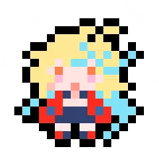
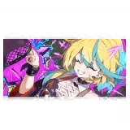
本地未收录该角色的语音台词。